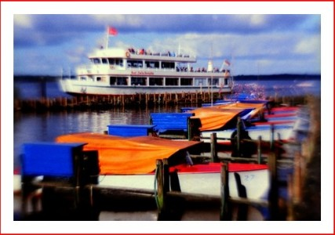
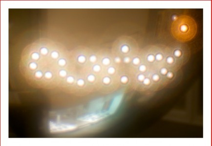

Die Objektivität eines Subjektivs
Es ist mal wieder an der Zeit für einen kleinen Nerd-Beitrag. In der klassischen Fotografie hat ja jeder Fotograf sein „Hausobjektiv“, also der Herschel hält sich meist an 50mm Festbrennweite, ich stehe auf 16mm FishEye, der jasper. an 24mm fest und viele andere Hobbyfotografen an die Kit-Objektive im Zoombereich 18-200mm (auch die sind gut…). Wie es also die Laune der Natur, oder in diesem Falle mein blindwütiges Blätterverhalten in Fachzeitschriften so wollte, bin ich auf dieses kleine skurrile Teil gestoßen: das Monochrom Subjektiv.
Das geläufige Adjektiv (in Fachkreisen auch „Wie“-Wort genannt) „objektiv“ verdeutlicht die unabhängige Betrachtungsweise von außen Die objektive Beurteilung soll gleichberechtigte Bewertung zum Beispiel in der Schule oder bei der Stiftung Warentest gewährleisten und schließlich auch zuletzt nutzt jeder Fotograf sein Objektiv, um eine Situation für die Ewigkeit festzuhalten, von ihm selbst losgelöst — ergo gibt er seine Wahrnehmung einer Situation „objektiv“ als Betrachtender weiter.
Jetzt gibt es aber das Subjektiv von Monochrom — der unterschiedliche Wortstamm spricht Bände (marketingtechnisch). Es besteht aus drei Teilen: dem Bajonett, der Halterung und dem Aufsatz, derer es vier verschiedene gibt:
Eine klassische Lochblende wie bei der Pinhole-Cam
Tiefenschärfe galore bei Blende 180, mit Belichtungszeiten von 2 Sekunden bis 15 Minuten und mehr. Oob das wohl die Digi-SLRs noch hinbekommen, ohne das der Sensor temperaturmäßig das Zeitliche segnet?
Die Plastiklinse (genauer Acryllinse)
Bekannt von der Holga Mittelformatkamera. Der typische Vignette-Effekt und Unschärfe am Rand wird hier erzielt und hat 65mm Brennweite bei Blende 5 (geradezu lichtstark gegen die Lochblende…).

Die Glasmeniskuslinse
Deren Benutzungszweck erschließt sich mir nicht auf Anhieb. Typische Kit-Objektive haben mindestens drei Linsen, also ist hier der Unterschied schonmal klar, zumal man die, ähh, konvexe Linse auch falschrum in das Subjektiv einlegen kann, so dass ein ganz neuer Effekt entsteht. Im allgemeinen haben die Bilder mit der Glaslinse einen leichten Weichzeichner-Effekt und sehen ein bisschen aus wie im Watte-Bausch-Nebel…
Die sogenannte "Zonenplatte"
Sie verdeutlicht, dass das Licht nicht nur eine rein geometrische Sache ist (die Objektive, die das Licht gezielt auf den Film/Sensor bringen), sondern auch Wellencharakter hat. Das Bild erscheint ziemlich unscharf, selbst bei Blende 32. Das Ding muss ich ausprobieren.

Weiterhin ist noch eine Extra-Blende für die Glaslinse dabei, mit der angeblich die Lichtstärke verbessert werden kann. Nunja, das bleibt es wohl auszuprobieren.
Da das Subjektiv auf jegliche Elektronik zum Scharfstellen verzichtet, ist hier die Kreativität des Anwenders gefragt. Der Vertrieb sagt auf seiner Internetseite, dass einige Canon-Modelle mit der integrierten Belichtungsmessung und dem Subjektiv was anfangen können, Nikon-Kameras werden wohl erst ab D200 unterstützt, bei allen anderen heißt es dann wohl schätzen oder den Handbelichtungsmesser aus dem alten Foto-Koffer graben.
Ich bin jedenfalls gespannt, ob ich in nächster Zeit so ein Ding in die Hände bekomme. Stellt Euch vor, RAW-Bilder mit der Schuhkarton-Kamera. Ist das nicht cool? Wir sollten einen Spendenaufruf für das Phase 5-Team starten, um den Notorious Nikon Boys so ein Teil zu bescheren. Ist ja auch mit 190 Euro gar nicht so teuer. Ich würde es gerne mal ausprobieren und die Ergebnisse präsentieren.
Hat vielleicht ein Mitglied der geneigten Leserschaft schon seine Hände an so ein Subjektiv gelegt? Habt Ihr schon Erfahrung in der digitalen Pinhole-Fotografie? Eure Meinung ist gefragt!
Abschließend weise ich darauf hin, dass ich die Bilder von der Monochrom-Seite kopiert hab, ich denke mal, dass die haben nix dagegen. Flickr gibt nicht wirklich viel her (nur Bilder von einem Franzosen der mit seiner D700 im Shop rumposed…).
P.S.: Wir kriegen kein Geld von denen für die Werbung, ich selbst hab lediglich großes Interesse dran und frage mich, ob mir jemand einen Tipp dazu gibt, ob es eine Investition lohnt. Ich hoffe mal auf ein bisschen Diskussion.


6 Kommentare zu "Die Objektivität eines Subjektivs"
- Externe Links im selben Fenster öffnen
- Externe Links in neuem Fenster öffnen
habi
ich kann auch mit nem guten objektiv schlechte bilder machen.
magnus
Die "Zonenplatte" steht in Berlin Marzahn und ist aus Stahlbeton!!!
Herschel Rubinstein
spendenaufruf? sowas kommt mir nicht ins haus. dann lieber alles mit werbung zuklatschen.
auf jeden fall werde ich mir das teil nicht kaufen, wenn die d70s nicht adäquat supportet wird. auch wenn ich schon lust hätte, das ding mal auszuprobieren.
TediousNilsen
pah. ick finds ne jute idee und möchte damit spielen.
jasper
um ehrlich zu sein find ich das ding quatsch... sorry niles. ich bleib bei meinem 24er (und wohl auch dem fünfer...).
für 180 euro kann ich mir eine lomo-, pinhole-, etc.-kamera kaufen und hab was handfestes und nicht so nen schraub-bajonett ohne autofokus, belichtungsmessung, und so weiter.
und außerdem gibts ja auch noch unser aller freund PS, mit dem man die ganzen effekte auch (künstlich) herstellen kann. also warum den effekt durch nen blödes objektiv, ähh, entschuldigung subjektiv, statt mit dem compi nachreguliert?
der sinn erschließt sich mir nicht ganz.
meine nikon und so nen teil?!
das ist ja wie nen ferrari mit trekkerreifen....
TediousNilsen
tja. nun. aber wer lang hat, kann lang hängen lassen; ergo: je mehr scherben in der tasche, desto höher die streetcredibility. so siehts aus, jasper, so siehts aus! und du musst zugeben, das es ein tolles spielzeug ist. als ernsthaftes objektiv kann man es nicht betrachten, das gebe ich zu....